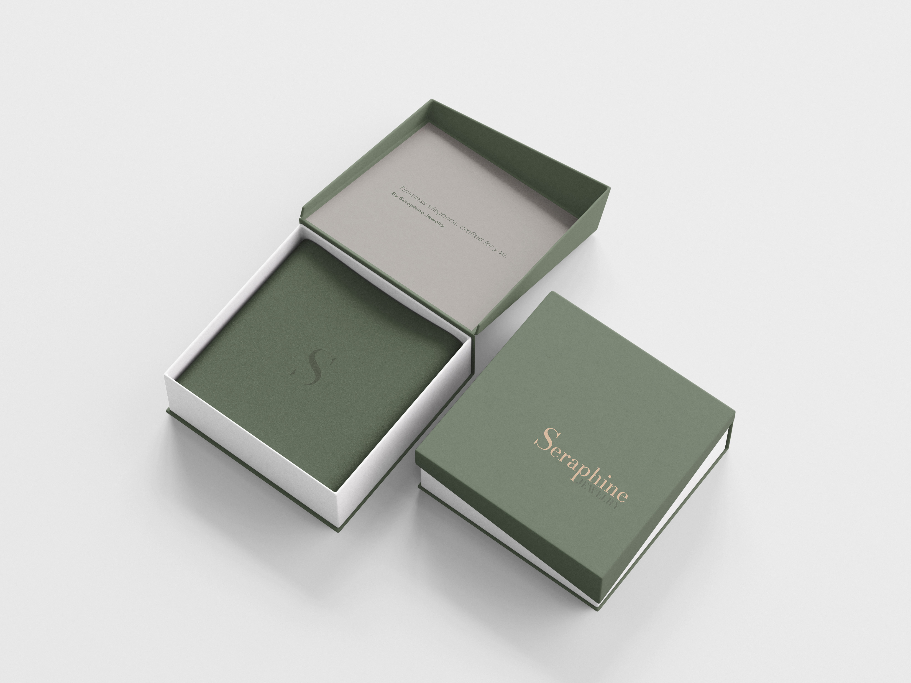
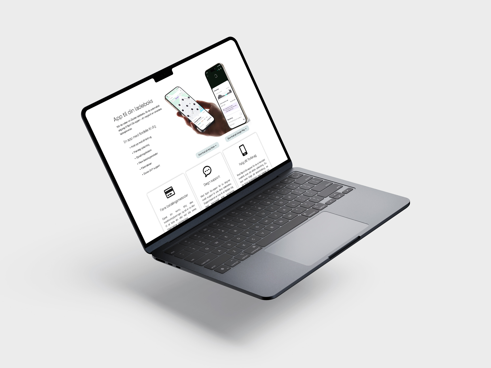
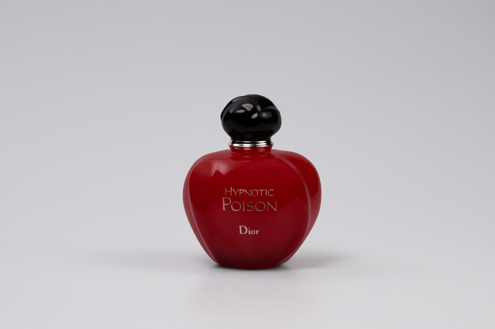
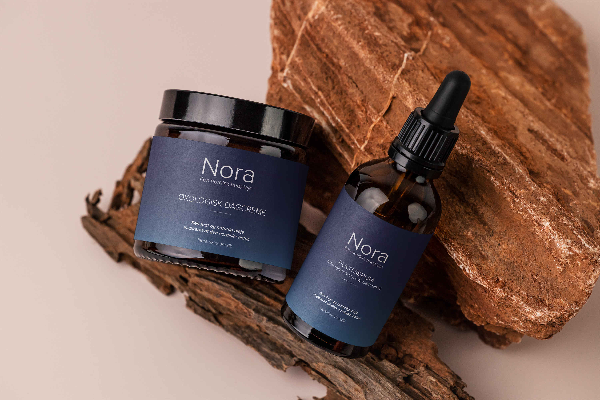

Portfolio – 10 cases
Siden 2013 har jeg haft fornøjelsen af at arbejde med passionerede... Her deler jeg 10 af mine bedste cases i mit portfolio.
Siden 2013 har jeg haft fornøjelsen af at arbejde med passionerede... Her deler jeg 10 af mine bedste cases i mit portfolio.
Flyeren er designet med fokus på brugervenlighed og klar vejvisning, så gæster nemt kan finde information og navigere festivalområdet. Layoutet er overskueligt med tydelige sektioner for program og praktiske oplysninger, og et integreret kort sikrer enkel orientering. Designet afspejler kundens ønske om et moderne og kreativt udtryk, kombineret med funktionalitet.

Dette emballagedesign er skabt med fokus på luksus, enkelhed og brandidentitet. Æsken kombinerer en dæmpet grøn tone med guldtryk, hvilket understøtter Seraphine Jewelrys værdier: tidløs elegance og eksklusivitet.
Jeg har designet hjemmesider for Østrøm med fokus på brugervenlighed, klar struktur og brandidentitet. Layoutet præsenterer produkterne på en overskuelig måde. Designet er responsivt og optimeret til både desktop og mobil for en problemfri oplevelse.


Jeg arbejder med produktfotografi med fokus på renhed, detaljer og brandidentitet. Målet er at skabe billeder, der præsenterer produkterne på en professionel og visuelt tiltalende måde, så de fremstår troværdige og attraktive for kunden.
Dette emballagedesign er skabt til hudplejeserien Nora, som fokuserer på naturlige og økologiske ingredienser. Designet kombinerer enkelhed og elegance for at understøtte brandets værdier om renhed og kvalitet.

Super enkelt design af logo i én farve til eksklusiv trøffelserie. Logodesignet er derefter brugt til design af labels og produktbrochure og opskiftsfolder. Designet falder godt ind i den nordiske stil.